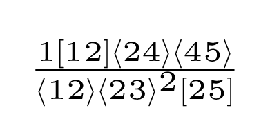

antares-results
pp → Vjj
pp → jjj
ggggg
all_plus
mhv
coeff_0
coeff_1
coeff_10
coeff_100
coeff_101
coeff_102
coeff_103
coeff_104
coeff_105
coeff_106
coeff_107
coeff_108
coeff_109
coeff_11
coeff_110
coeff_111
coeff_112
coeff_113
coeff_114
coeff_12
coeff_13
coeff_14
coeff_15
coeff_16
coeff_17
coeff_18
coeff_19
coeff_2
coeff_20
coeff_21
coeff_22
coeff_23
coeff_24
coeff_25
coeff_26
coeff_27
coeff_28
coeff_29
coeff_3
coeff_30
coeff_31
coeff_32
coeff_33
coeff_34
coeff_35
coeff_36
coeff_37
coeff_38
coeff_39
coeff_4
coeff_40
coeff_41
coeff_42
coeff_43
coeff_44
coeff_45
coeff_46
coeff_47
coeff_48
coeff_49
coeff_5
coeff_50
coeff_51
coeff_52
coeff_53
coeff_54
coeff_55
coeff_56
coeff_57
coeff_58
coeff_59
coeff_6
coeff_60
coeff_61
coeff_62
coeff_63
coeff_64
coeff_65
coeff_66
coeff_67
coeff_68
coeff_69
coeff_7
coeff_70
coeff_71
coeff_72
coeff_73
coeff_74
coeff_75
coeff_76
coeff_77
coeff_78
coeff_79
coeff_8
coeff_80
coeff_81
coeff_82
coeff_83
coeff_84
coeff_85
coeff_86
coeff_87
coeff_88
coeff_89
coeff_9
coeff_90
coeff_91
coeff_92
coeff_93
coeff_94
coeff_95
coeff_96
coeff_97
coeff_98
coeff_99
single_minus
uubddbg
uubggg
pp → γγγ
amplitudes
antares-results
pp → jjj
ggggg
mhv
coeff_17
View page source
coeff_17

{kind=link}